| 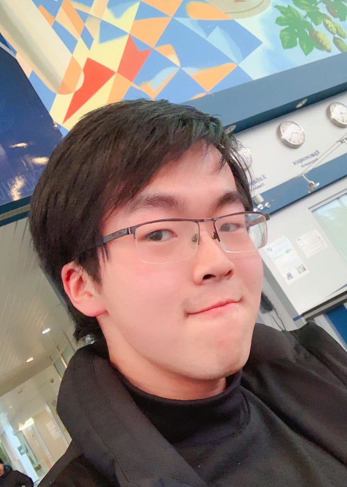 |
Yulin Wang (王语霖)Ph.D. Student, Tsinghua UniversityCV (2022.3.23) • Google Scholar • Semantic Scholar • GitHub |
About Me
I am a third year Ph.D. student in the Department of Automation at Tsinghua University, advised by Prof. Gao Huang and Prof. Cheng Wu. Before that, I received my B.E. degree in Automation at Beihang University.
Feel free to call me "Rainforest", which shares the same pronunciation as "Yulin" in Chinese.
My research interests lie in the efficient training and inference of deep learning models.
News
2022.03: AdaFocusV2 is Accepted by CVPR 2022.
2021.12: Awarded by the Baidu Fellowship 2021 (10 PhD candidates worldwide).
2021.10: Awarded by the CCF-CV Outstanding Young Researcher Award 2021 (3 in China).
2021.09: Dynamic Vision Transformer (DVT) is Accepted by NeurIPS 2021.
2021.09: Our Survey on Dynamic Neural Networks is Accepted by TPAMI (IF=16.39).
2021.07: AdaFocus is Accepted by ICCV 2021 for Oral Presentation.
2021.06: Not All Images are Worth 16x16 Words! Our Dynamic ViT (DVT) is Available at Arxiv/Github.
2021.05: Selected to be an Outstanding Reviewer of CVPR 2021.
2021.03: Three Papers are Accepted by CVPR 2021 (with one Oral).
2021.01: Journal Version of ISDA is Accepted by TPAMI (IF=16.39).
2021.01: One Paper is Accepted by ICLR 2021.
Recent Publications & Preprints
| 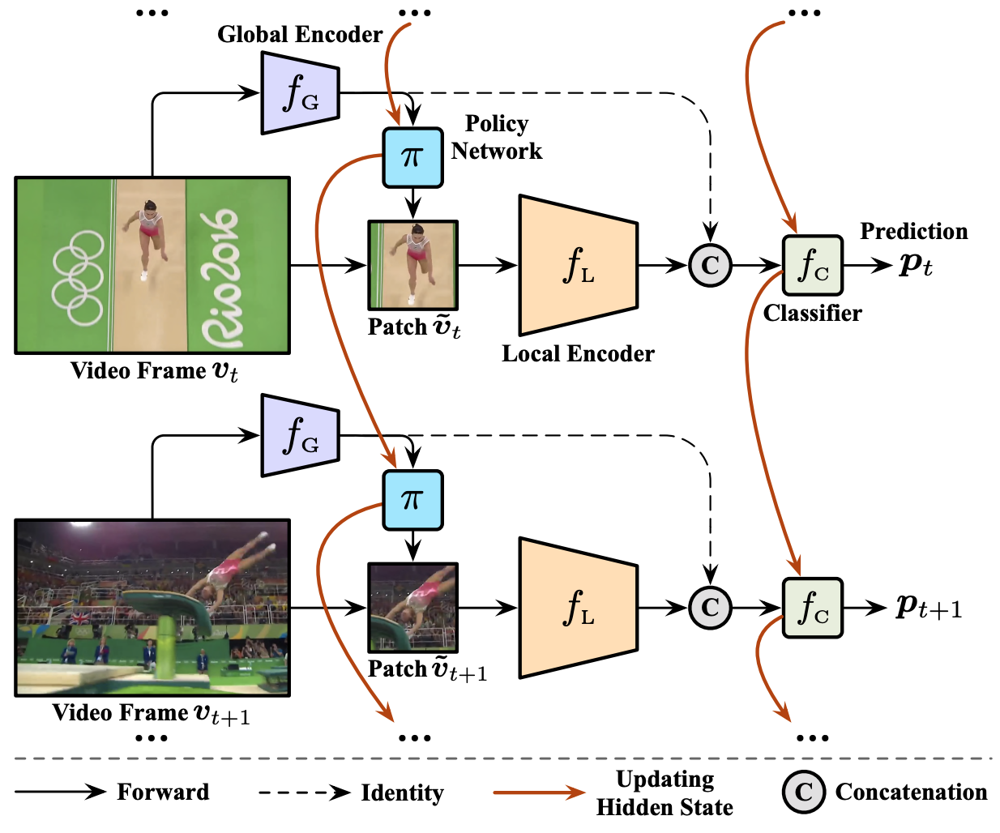 |
AdaFocus V2: End-to-End Training of Spatial Dynamic Networks for Video Recognition
IEEE/CVF Conference on Computer Vision and Pattern Recognition (CVPR) 2022 Yulin Wang, Yang Yue, Yuanze Lin, Haojun Jiang, Zihang Lai, Victor Kulikov, Nikita Orlov, Humphrey Shi, and Gao Huang [PDF] [Code] Compared to AdaFocus-V1: End-to-End trainable, much easier to implement, less than 50% training cost, but with significantly stronger performance. |
| 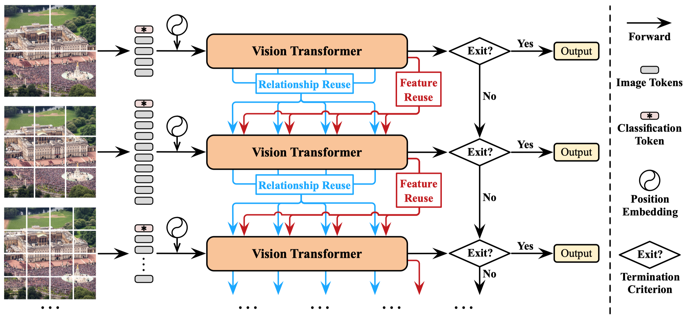 |
Not All Images are Worth 16x16 Words: Dynamic Transformers for Efficient Image Recognition
Advances in Neural Information Processing Systems (NeurIPS) 2021 Yulin Wang, Rui Huang, Shiji Song, Zeyi Huang, and Gao Huang [PDF] [Code] [知乎] [量子位] [AI科技评论] We develop a Dynamic Vision Transformer (DVT) to automatically configure a proper number of tokens for each individual image, leading to a significant improvement in computational efficiency, both theoretically and empirically. |
| 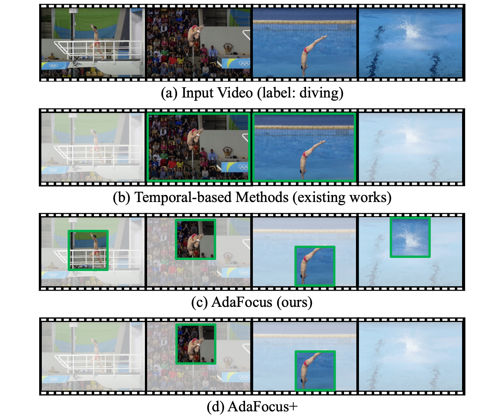 |
Adaptive Focus for Efficient Video Recognition
IEEE/CVF International Conference on Computer Vision (ICCV Oral) 2021 Yulin Wang, Zhaoxi Chen, Haojun Jiang, Shiji Song, Yizeng Han, and Gao Huang [PDF] [Code] [Poster] [知乎][Bilibili] In this paper, we explore the spatial redundancy in video recognition with the aim to improve the computational efficiency. Extensive experiments on five benchmark datasets, i.e., ActivityNet, FCVID, Mini-Kinetics, Something-Something V1&V2, demonstrate that our method is significantly more efficient than the competitive baselines. |
| 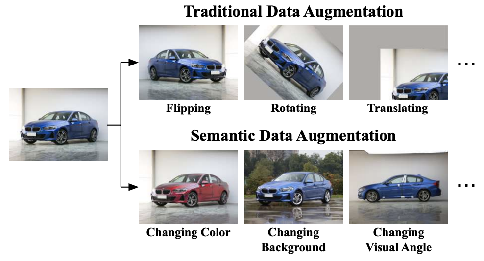 |
Regularizing Deep Networks with Semantic Data Augmentation
IEEE Transactions on Pattern Analysis and Machine Intelligence (TPAMI, Q1, IF=16.39), 2021 Yulin Wang, Gao Huang, Shiji Song, Xuran Pan, Yitong Xia, and Cheng Wu [PDF] [Code] [知乎] [新智元] [AI科技评论] Journal version of ISDA. More ImageNet results. Visualizations on ImageNet. More results on semi-supervised learning, semantic segmentation and object detection. |

|
Revisiting Locally Supervised Learning: an Alternative to End-to-end Training
International Conference on Learning Representations (ICLR) 2021 Yulin Wang, Zanlin Ni, Shiji Song, Le Yang, and Gao Huang [PDF] [Code] [Poster] [知乎] [PaperWeekly] [Bilibili] We provide a deep understanding of locally supervised learning, and make it perform on par with end-to-end training, while with significantly reduced GPUs memory footprint. |
| 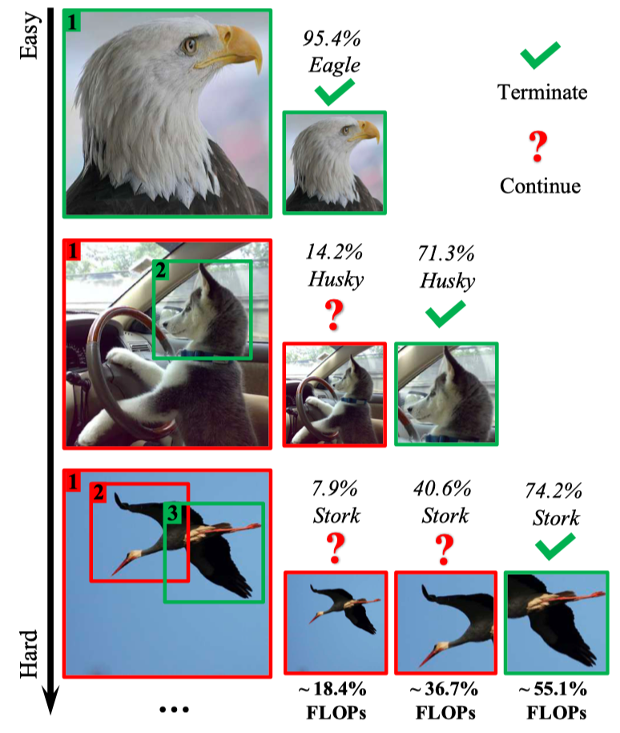 |
Glance and Focus: a Dynamic Approach to Reducing Spatial Redundancy in Image Classification
Advances in Neural Information Processing Systems (NeurIPS) 2020 Yulin Wang, Kangchen Lv, Rui Huang, Shiji Song, Le Yang, and Gao Huang [PDF] [Code] [Poster] [知乎] [AI科技评论] We propose a general framework for inferring CNNs efficiently, which reduces the inference latency of MobileNets-V3 by 1.3x on an iPhone XS Max without sacrificing accuracy. |
| 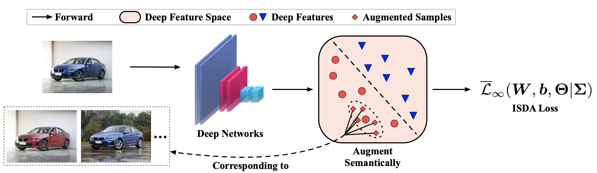 |
Implicit Semantic Data Augmentation for Deep Networks
Advances in Neural Information Processing Systems (NeurIPS) 2019 Yulin Wang, Xuran Pan, Shiji Song, Hong Zhang, Cheng Wu, and Gao Huang [PDF] [Code] [Poster] We propose a novel implicit semantic data augmentation (ISDA) approach to complement traditional augmentation techniques like flipping or translation. |
| 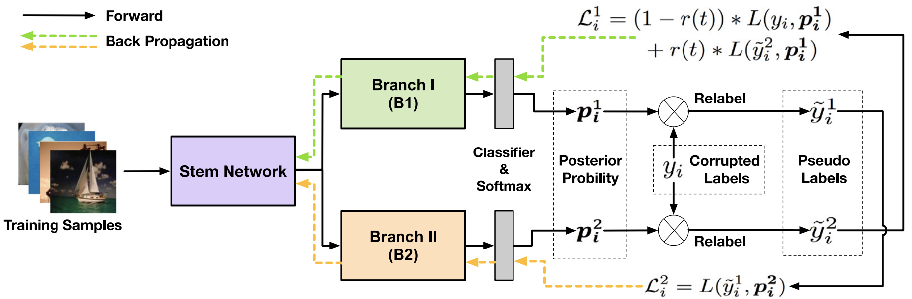 |
Collaborative Learning with Corrupted Labels
Neural Networks (Q1, IF=8.05), 2019 Yulin Wang, Rui Huang, Gao Huang, Shiji Song, and Cheng Wu [PDF] We propose a collaborative learning approach to improve the robustness and generalization performance of DNNs on datasets with corrupted labels. |
| 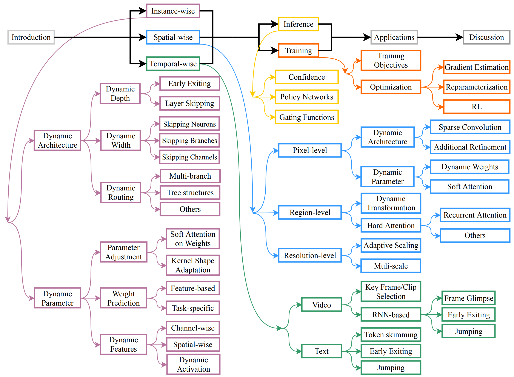 |
Dynamic Neural Networks: A Survey
IEEE Transactions on Pattern Analysis and Machine Intelligence (TPAMI, IF=16.39), 2021 Yizeng Han, Gao Huang, Shiji Song, Le Yang, Honghui Wang, and Yulin Wang [PDF] [智源社区][机器之心-在线讲座][Bilibili] Dynamic neural network is an emerging research topic in deep learning. Compared to static models which have fixed computational graphs and parameters at the inference stage, dynamic networks can adapt their structures or parameters to different inputs, leading to notable advantages in terms of accuracy, computational efficiency, adaptiveness, etc. In this survey, we comprehensively review this rapidly developing area. |
| 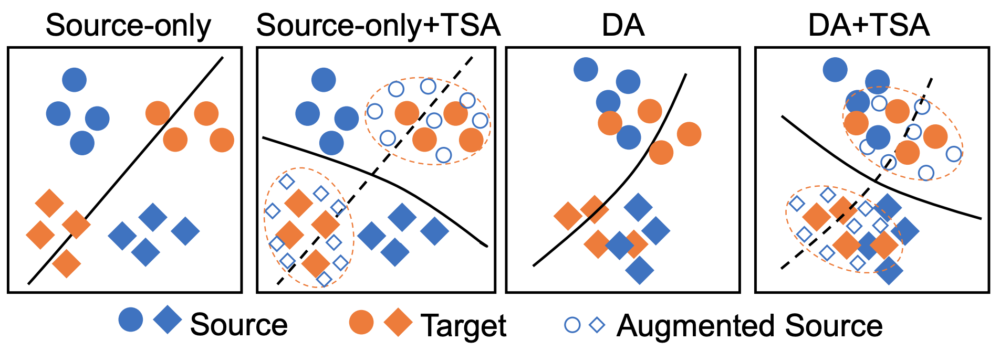 |
Transferable Semantic Augmentation for Domain Adaptation
IEEE/CVF Conference on Computer Vision and Pattern Recognition (CVPR Oral) 2021 Shuang Li, Mixue Xie, Kaixiong Gong, Chi Harold Liu, Yulin Wang, and Wei Li [PDF] [Code] This paper extends the ISDA approach to the problem of domain adaptation, resulting in a simple but effective transferable semantic augmentation (TSA) algorithm. Extensive experiments on four benchmarks are conducted. |
| 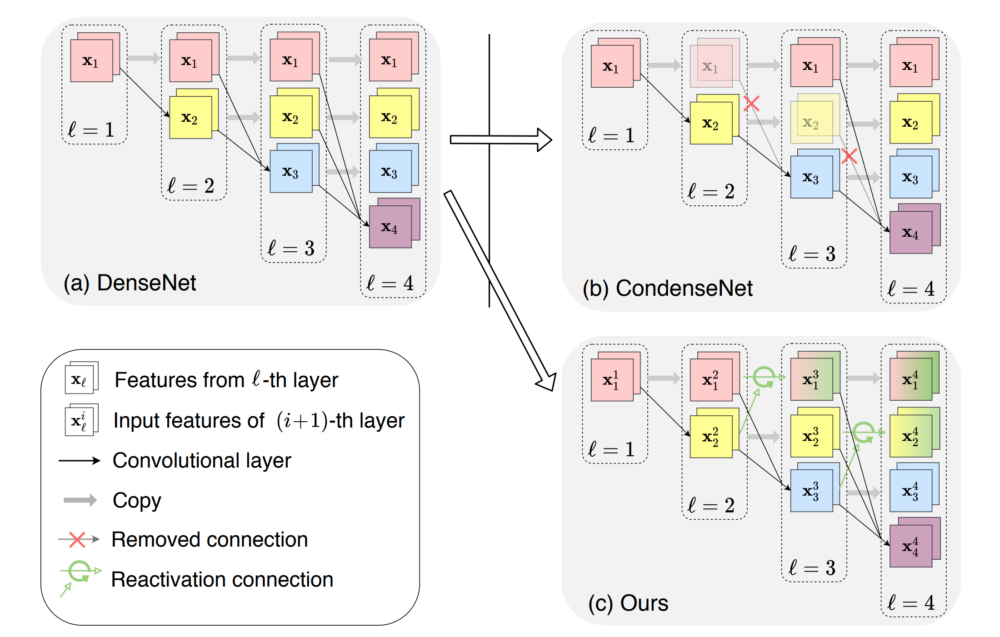 |
CondenseNet V2: Sparse Feature Reactivation for Deep Networks
IEEE/CVF Conference on Computer Vision and Pattern Recognition (CVPR) 2021 Le Yang, Haojun Jiang, Ruojin Cai, Yulin Wang, Shiji Song, Gao Huang, and Qi Tian [PDF] [Code] We propose a sparse feature reactivation approach on the basis of CondenseNet, aiming at actively increasing the utility of features that have become redundant. CondenseNetV2 achieves state-of-the-art performance on image classification and object detection in terms of both theoretical efficiency and practical speed. |
| 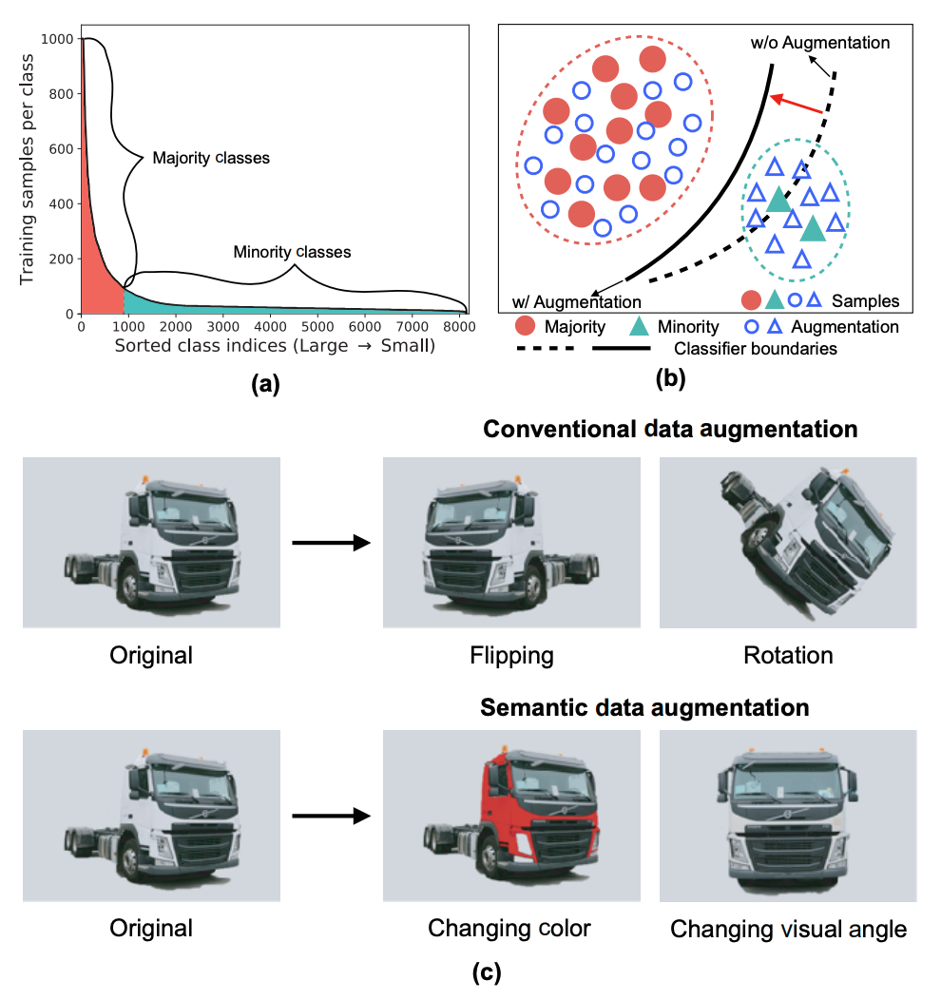 |
MetaSAug: Meta Semantic Augmentation for Long-Tailed Visual Recognition
IEEE/CVF Conference on Computer Vision and Pattern Recognition (CVPR) 2021 Shuang Li, Kaixiong Gong, Chi Harold Liu, Yulin Wang, Feng Qiao, and Xinjing Cheng [PDF] [Code] A meta-learning based ISDA algorithm for long-tailed problems. Results on CIFAR-LT-10/100, ImageNet-LT, and iNaturalist 2017/2018 are presented. |
| 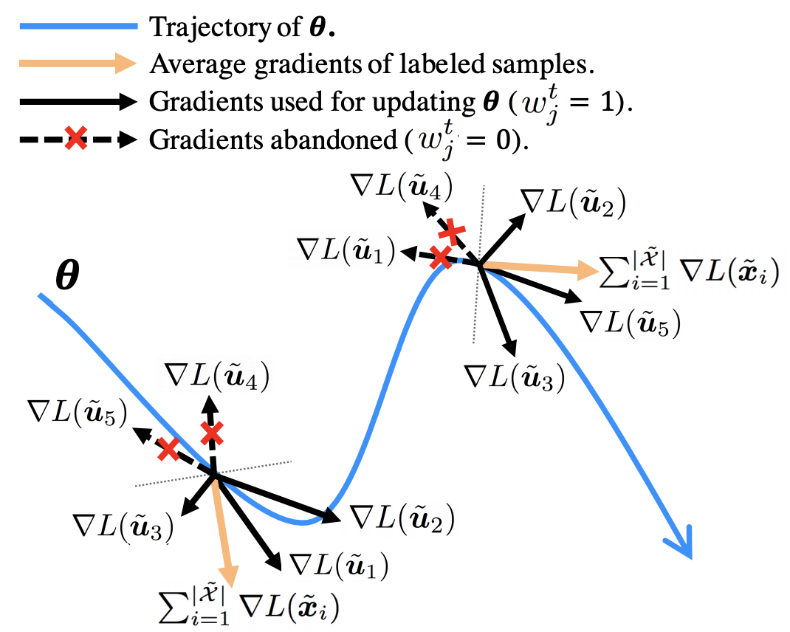 |
Meta-Semi: A Meta-learning Approach for Semi-supervised Learning
arXiv Preprint Yulin Wang, Jiayi Guo, Shiji Song, and Gao Huang [PDF] In real semi-supervised learning scenarios, the labeled data is scarce for extensive hyper-parameter search. To this end, we propose a novel meta-learning based algorithm that requires tuning only one additional hyper-parameter to achieve competitive performance under various conditions. |
|
Currently, I have several papers under review as well. I hope I will receive positive results. If you are interested in my research, please feel free to reach me.
|
Invited Talks
- 2019.10, SCSE, Beihang University, Semantic Data Augmentation
- 2019.12, School of Computer Sci. and Tech., Beijing Institute of Technology, Semantic Data Augmentation
- 2020.03, Doctoral Students Forum, Tsinghua University, Semantic Data Augmentation
- 2020.06, Huawei Technologies Ltd., Glance and Focus Networks
- 2020.11, Qingyuan Seminar, Glance and Focus Networks
- 2021.02, Qingyuan Seminar, Locally Supervised Deep Learning
- 2021.03, Huawei Technologies Ltd., Adaptive Focus for Video Recognition
- 2021.03, ByteDance Ltd., Semantic Data Augmentation
- 2021.03, SFFAI, Semantic Data Augmentation
- 2021.04, Doctoral Students Forum, Tsinghua University, Locally Supervised Deep Learning
- 2021.04, Beijing Academy of Artificial Intelligence, Dynamic Image/Video Recognition
- 2021.04, TechBeat Community, Jiangmen Venture Capital, Locally Supervised Deep Learning
- 2021.04, SFFAI, Locally Supervised Deep Learning
- 2021.06, AI Time, Locally Supervised Deep Learning
- 2021.07, SIA, Chinese Academy of Science, Efficient Deep Learning
- 2021.09, Aibee (invited by Yuanqing Lin), Semantic Data Augmentation
- 2021.10, School of Computer Science, Fudan University, Dynamic Deep Networks for Reducing Spatial Redundancy
- 2021.12, The fourth Chinese Conference on Pattern Recognition and Computer Vision (PRCV 2021), Dynamic Deep Networks for Reducing Spatial Redundancy
Academic Service
|
Reviewer for TPAMI, IJCV, T-Cybernetics, ...
Reviewer for ICML, NeurIPS, ICLR, CVPR, ICCV, ECCV, ... |
Education
|
Ph.D. in Pattern Recognition and Machine Learning, Tsinghua University, China.
2019.8 - Present |
|
B.Eng. in Automation, Beihang University, China.
2015.8 - 2019.6 (GPA Top 1/231) |
Research Experience
|
Intern, Berkeley Deep Drive, University of California Berkeley, CA, USA.
2018.7 - 2018.8, advised by Dr. Ching-Yao Chan. |
|
Intern, Lab of Intelligent Manufacturing, Beihang University, China.
2017.6 - 2018.6, advised by Prof. Fei Tao. |
Selected Honors
- Baidu Fellowship, Baidu Inc., 2021 (百度奖学金, 10 PhD candidates worldwide)
- National Scholarship, Ministry of Education of China, 2021 (Top 2%)
- CCF-CV Outstanding Young Researcher Award, China Computer Federation (CCF), 2021 (CCF-CV学术新锐奖, 3 in China every year)
- Outstanding Reviewer, CVPR, 2021
- Outstanding Oral Presentation, Doctoral Students Forum, Tsinghua University, 2021
- Travel Award, NeurIPS, 2019
- Shenyuan Medal, Beihang University, 2018 (Top 10 in 18,000+ undergraduate students every year)
- National Scholarship, Ministry of Education of China, 2018 (Top 2%)
- National Scholarship, Ministry of Education of China, 2017 (Top 2%)
- Innovation Scholarship, Ministry of Industry and Information Technology of China, 2017 (Top 1/231)
- First Prize in the "Zhou Peiyuan" Mechanics Competition for Undergraduate Students, 2017 (Top 0.3%)
- First Prize in National Undergraduate Mathematical Contest in Modeling, 2017 (Top 0.2%)
- Scholarship for Outstanding Academic Performance, Beihang University, 2016-2019 (Top 5%)
Contact
|
Email: wang-yl19@mails.tsinghua.edu.cn
Address: Room 616, Central Main building, Tsinghua University, Beijing
|